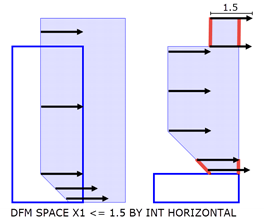
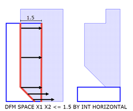
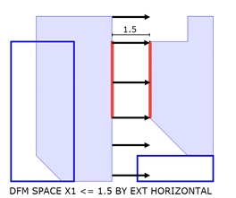
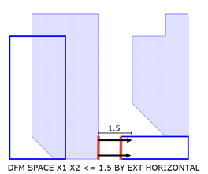
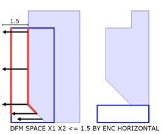
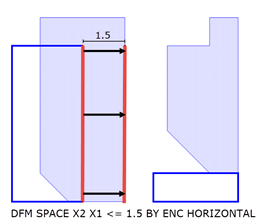
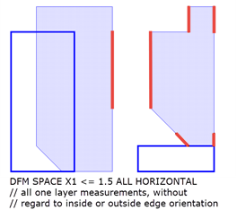
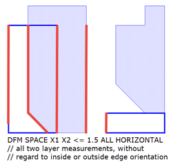

Layer operation
License: Calibre nmDRC-H
Measures the separation between edges and outputs edges that meet the specified constraint. For large (> 0.5 um) distance constraints, DFM Space is more efficient than other dimensional check operations.
DFM SPACE layer1 [layer2] distance_constraint
{ BY EXT | BY INT | BY ENC | ALL }
[HORIZONTAL VERTICAL | HORIZONTAL | VERTICAL]
[COUNT shielding_constraint] [BY LAYER layer] [MEASURE ALL]
[[NOT] CONNECTED] [GRID step]
A required polygon layer or derived edge layer.
Enclose layer1 or layer2 in brackets ([ ]) to output a derived edge layer rather than the default derived error layer. See “Edge-Directed Output”.
An optional polygon layer or derived edge layer. When layer2 is specified, the measurements are made from layer1 to layer2.
A required constraint on the distance between two edges. The constraint must have an upper bound (that is, the constraints > a, >= a, and != a are not allowed). See the “Constraint Notation” column of Table 1 in the “Constraints” topic.
The distances are measured only between edges that project either vertically or horizontally onto each other. The distance between edges is measured along the horizontal and vertical directions. See the HORIZONTAL and VERTICAL keywords.
A required keyword choice that specifies the measurement to perform.
BY EXT — Measures the external distances between two outside-facing edges.
BY INT — Measures the internal distances between two inside-facing edges.
BY ENC — Measures the enclosure distances between an outside-facing edge from layer1 and an inside-facing edge from layer2.
ALL — Measures all edge separations, without considering the inside or outside edge orientation. If both layer1 and layer2 are specified, measurements are made both from layer1 to layer2, and from layer2 to layer1.
See “DFM Space Measurements”.
An optional keyword choice that specifies the direction in which measurements are made. The direction is that of the measurement, not that of the edge. Edges must project onto each other in the indicated direction in order for the measurement to occur.
HORIZONTAL VERTICAL — The default. Measure distances parallel to the x‑axis and parallel to the y-axis.
HORIZONTAL — Measure only distances parallel to the x-axis.
VERTICAL — Measure only distances parallel to the y-axis.
An optional keyword and argument used to control shielding. The shielding_constraint uses the standard constraint format and corresponds to the number of edges lying between two measured edges. That is, for two edges that satisfy all other criteria of the operation, the edges are output if the number of intervening edges between them on some layer meets the shielding_constraint. Any edge is considered a shielding edge if it lies between two measured edges.
The default shielding constraint is “==0”, that is, no intervening edges between two measured edges.
The shielding constraint must have an upper bound (that is, the constraints > a, >= a, and != a are not allowed).
Partial shielding is supported—if part of the edge is shielded and part is not, the unshielded portion is returned as output.
Large shielding constraints cause performance degradation.
An optional keyword and argument used to control shielding. The BY LAYER keyword is valid only for two-layer DFM Space operations. When specified, only the edges on the specified layer are considered as shielding edges. The layer specified must be one of the two input layers.
An optional keyword that instructs the operation to ignore the polygon containment criteria when two input layers are specified. This keyword is similar to that for the External, Internal, and Enclosure operations. MEASURE ALL allows the operation to “see through” polygons that ordinarily it would not. However, if COUNT is not specified, the default COUNT==0 is used. In order to effectively use MEASURE ALL, specify a non-default “COUNT shielding_constraint” to allow edges between two measured edges.
By default, two-layer measurements must satisfy the polygon containment criteria described in “Polygon Containment Criteria” section of the Calibre Verification User’s Manual.
An optional keyword that causes connectivity to be considered. The input layers must have nodal information.
CONNECTED — Output only edges that belong to the same net.
NOT CONNECTED — Output only edges that do not belong to the same net.
An optional keyword and argument that enables pitch and grid checking. If GRID step is specified, then vertical or horizontal edge pairs separated by a multiple of step are not output.
Performs very efficient measurements of edge separations for large (> 0.5 um) distance constraints. The performance of DFM Space is better than comparable External, Internal, and Enclosure operations when the distance constraint is large. The output is a derived error layer by default.
Enclose layer1 or layer2 in brackets ([ ]) to output a derived edge layer containing only the edge segments from the indicated input layer that meet the distance_constraint. This is called positive edge-directed output. See “Edge-Directed Output” in the Calibre Verification User’s Manual for additional details.
Edge-directed output can be specified for layer1 or layer2, but not both. Negative edge-directed output, indicated by enclosing a layer name in parentheses, is not supported; however, it can be calculated with the Not Coincident Edge layer operation. See “Example 2”.
As described with the distance_constraint definition, the measurement metric for DFM Space differs from that of the Internal, External, and Enclosure dimensional check operations. However, for input data that is orthogonal to the database axes, DFM Space measurements with BY EXT, BY INT, and BY ENC correspond to the OPPOSITE metric for the External, Internal, and Enclosure operations.
DFM Space differs from Internal, External, and Enclosure in these ways:
Measurements are only made in the horizontal or vertical direction, between edges that project either vertically or horizontally onto each other.
The handling of shielding edges differs between DFM Space and the corresponding dimensional check operations. The default “COUNT==0” in DFM Space is equivalent to EXCLUDE SHIELDED in the dimensional check operations. In addition, specifying MEASURE ALL in DFM SPACE does not alter the default “COUNT==0” specification.
Internal, External, and Enclosure consider the angle made by the edges being measured, while DFM Space only considers horizontal and vertical projection. This difference is particularly relevant when angled edges are present. See the orientation_filter for the dimensional check operations, and “Edge Measurement” in the Calibre Verification User’s Manual.
The following figures show DFM Space measurements with HORIZONTAL. These conventions are used:
Figure 1. DFM SPACE
BY INT
 |
 |
Figure 2. DFM SPACE
BY EXT
 |
 |
Figure 3. DFM SPACE
BY ENC
 |
 |
Figure 4. DFM SPACE
ALL
 |
 |
Generate a derived error layer consisting of edge pairs for gates with an internal distance less than the variable optradius. The distance is measured only in the horizontal direction.
VARIABLE optradius 2
gate_cl = DFM SPACE gate < optradius BY INT HORIZONTALGenerate a derived edge layer consisting of layer1 edges that meet the BY EXT constraint (positive error-directed output). Use Not Coincident Edge to generate a derived edge layer consisting of layer1 edge segments that do not meet the constraint.
pos_edge = DFM SPACE [layer1] < 3 BY EXT
neg_edge = NOT COINCIDENT EDGE layer1 pos_edge